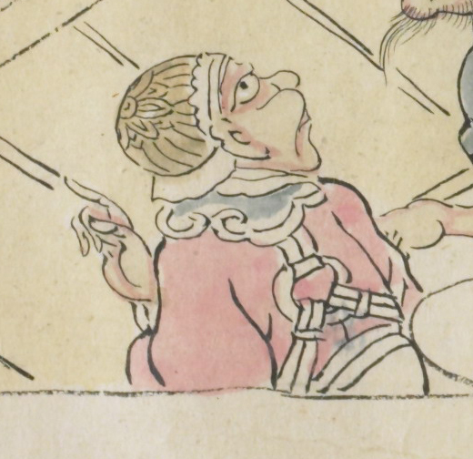

帽子のようなものをかぶった鬼。桃色の衣服を身につけている。青い襟巻きをしている。斜め上を眺め、上方を指差している。
出典：親書誌：U426_nichibunken_0079：酒天童子絵巻；シュテンドウジエマキ／日付：2006／資源識別子：U426_nichibunken_0079_0007_0005
Copyright (c)2010- International Research Center for Japanese Studies, Kyoto, Japan. All rights reserved.